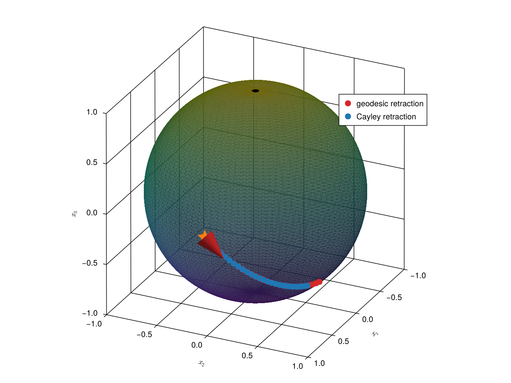
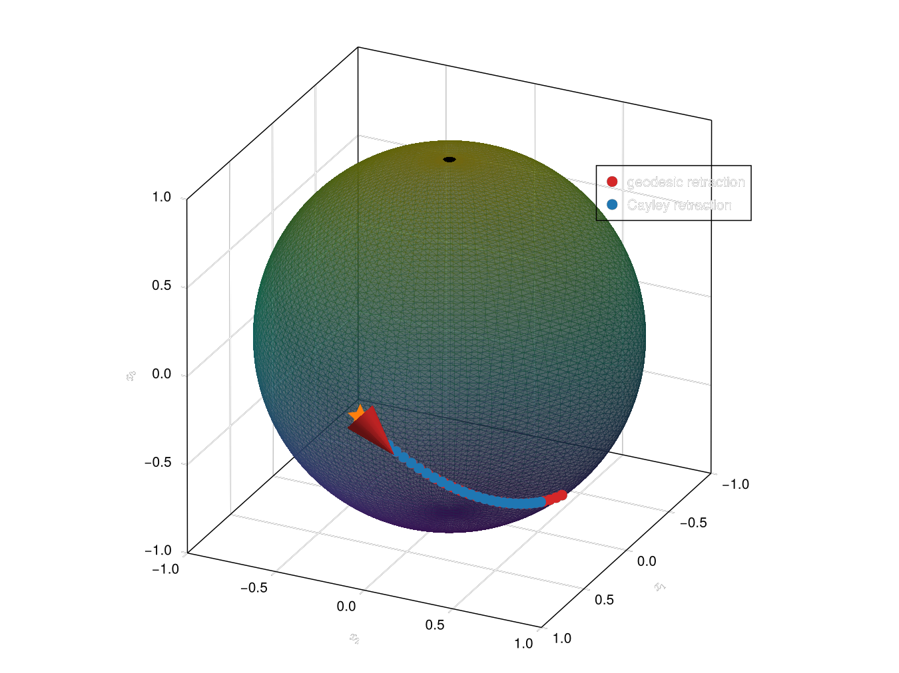
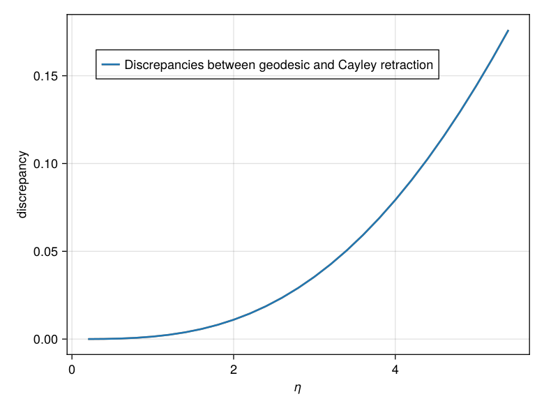
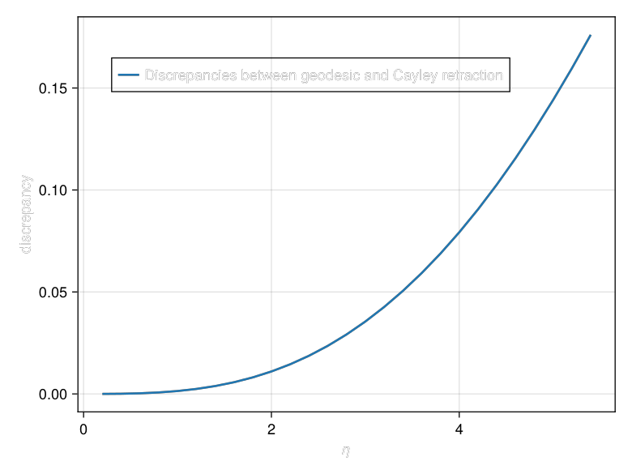

Retractions
A retraction is how every step in this package is taken. An OptimizerMethod produces a direction in the horizontal component $\mathfrak{g}^\mathrm{hor}$ of the Lie algebra, and the retraction turns that direction back into a point of the manifold. Two of them ship with the package — Cayley, the Cayley transform, and Geodesic, the exponential map — and since 0.2.0 Geodesic additionally carries an algorithm that says how the exponential is evaluated. There are four of those, and the choice between them is a numerical one: they compute the same map and differ in accuracy at a large step, in cost, and in which backends they run on.
This page collects the theory of all of it: what the retractions are, why the exponential needs an algorithm at all, what the four algorithms do, and which one to reach for. The optimizer that uses them is described on the Optimization on Homogeneous Spaces page.
What a retraction is
In practice we usually do not solve the geodesic equation exactly in each optimization step (even though this is possible and computationally feasible), but prefer approximations that are called "retractions" [8] for numerical stability. The definition of a retraction in GeometricOptimizers is slightly different from how it is usually defined in textbooks [4, 8]. We discuss these differences here.
Classical Retractions
By "classical retraction" we here mean the textbook definition.
A classical retraction is a smooth map
\[R: T\mathcal{M}\to\mathcal{M}:(x,v)\mapsto{}R_x(v),\]
such that each curve $c(t) := R_x(tv)$ is a local approximation of a geodesic, i.e. the following two conditions hold:
- $c(0) = x$ and
- $c'(0) = v.$
Perhaps the most common example for matrix manifolds is the Cayley retraction. It is a retraction for many matrix Lie groups [4, 17, 18].
The Cayley retraction for $V\in{}T_\mathbb{I}G\equiv\mathfrak{g}$ is defined as
\[\mathrm{Cayley}(V) = \left(\mathbb{I} - \frac{1}{2}V\right)^{-1}\left(\mathbb{I} +\frac{1}{2}V\right).\]
We show that the Cayley transform is a retraction for $G = SO(N)$ at $\mathbb{I}\in{}SO(N)$:
Proof
The Cayley transform trivially satisfies $\mathrm{Cayley}(\mathbb{O}) = \mathbb{I}$. So what we have to show is the second condition for a retraction and that $\mathrm{Cayley}(V)\in{}SO(N)$. For this take $V\in\mathfrak{so}(N).$ We then have
\[\frac{d}{dt}\bigg|_{t = 0}\mathrm{Cayley}(tV) = \frac{d}{dt}\bigg|_{t = 0}\left(\mathbb{I} - \frac{1}{2}tV\right)^{-1}\left(\mathbb{I} +\frac{1}{2}tV\right) = \frac{1}{2}V - \frac{1}{2}V^T = V,\]
which satisfies the second condition. We further have
\[\frac{d}{dt}\bigg|_{t = 0}(\mathrm{Cayley}(tV))^T\mathrm{Cayley}(tV) = (\frac{1}{2}V - \frac{1}{2}V^T)^T + \frac{1}{2}V - \frac{1}{2}V^T = 0.\]
This proves that the Cayley transform maps to $SO(N)$.
We should mention that the factor $\frac{1}{2}$ is sometimes left out in the definition of the Cayley transform when used in different contexts. But it is necessary for defining a retraction as without it the second condition is not satisfied.
We can also use the Cayley retraction at a different point than the identity $\mathbb{I}.$ For this consider $\bar{A}\in{}SO(N)$ and $\bar{B}\in{}T_{\bar{A}}SO(N) = \{\bar{B}\in\mathbb{R}^{N\times{}N}: \bar{A}^T\bar{B} + \bar{B}^T\bar{A} = \mathbb{O}\}$. We then have $\bar{A}^T\bar{B}\in\mathfrak{so}(N)$ and
\[ \overline{\mathrm{Cayley}}: T_{\bar{A}}SO(N) \to SO(N), \bar{B} \mapsto \bar{A}\mathrm{Cayley}(\bar{A}^T\bar{B}),\]
is a retraction $\forall{}\bar{A}\in{}SO(N)$.
As a retraction is always an approximation of the geodesic map, we now compare the cayley retraction for the example we introduced along Riemannian manifolds:
η_increments = 0.2 : 0.2 : 5.4
Δ_increments = [Δ * η for η in η_increments]
Y_increments_geodesic = [geodesic(Y, Δ_increment) for Δ_increment in Δ_increments]
Y_increments_cayley = [cayley(Y, Δ_increment) for Δ_increment in Δ_increments]

We see that for small $\Delta$ increments the Cayley retraction seems to match the geodesic retraction very well, but for larger values there is a notable discrepancy. We can plot this discrepancy directly:
zip_ob = zip(Y_increments_geodesic, Y_increments_cayley, axes(Y_increments_geodesic, 1))
discrepancies = [norm(Y_geo_inc - Y_cay_inc) for (Y_geo_inc, Y_cay_inc, _) in zip_ob]
nothing┌ Warning: `arrows` are deprecated in favor of `arrows2d` and `arrows3d`.
└ @ Makie ~/.julia/packages/Makie/XzVRj/src/basic_recipes/arrows.jl:166

In GeometricOptimizers
The way we use retractions[1] in GeometricOptimizers is slightly different from their classical definition:
Given a section $\lambda:\mathcal{M}\to{}G,$ where $\mathcal{M}$ is a homogeneous space, a retraction is a map $\mathrm{Retraction}:\mathfrak{g}^\mathrm{hor}\to{}G$ such that
\[\Delta \mapsto \lambda(Y)\mathrm{Retraction}(\lambda(Y)^{-1}\Omega(\Delta)\lambda(Y))E,\]
is a classical retraction.
This map $\mathrm{Retraction}$ is also what was visualized in the figure on the general optimization framework. We now discuss how the geodesic retraction (exponential map) and the Cayley retraction are implemented in GeometricOptimizers.
Retractions for Homogeneous Spaces
Here we harness special properties of homogeneous spaces to obtain computationally efficient retractions for the Stiefel manifold and the Grassmann manifold. This is also discussed in e.g. [9, 17].
The geodesic retraction is a retraction whose associated curve is also the unique geodesic. For many matrix Lie groups (including $SO(N)$) geodesics are obtained by simply evaluating the exponential map [8, 19]:
The geodesic on a compact matrix Lie group $G$ with bi-invariant metric for $\bar{B}\in{}T_{\bar{A}}G$ is simply
\[\gamma(t) = \exp(t\cdot{}\bar{B}\bar{A}^{-1})\bar{A} = \bar{A}\exp(t\cdot{}\bar{A}^{-1}\bar{B}),\]
where $\exp:\mathfrak{g}\to{}G$ is the matrix exponential map.
The last equality in the equation above is a result of:
\[\begin{aligned} \exp(\bar{A}^{-1}\hat{B}\bar{A}) = \sum_{k=0}^\infty\frac{1}{k!}(\bar{A}^{-1}\hat{B}\bar{A})^k & = \sum_{k=0}^\infty \frac{1}{k!}\underbrace{(\bar{A}^{-1}\hat{B}\bar{A})\cdots(\bar{A}^{-1}\hat{B}\bar{A})}_{\text{$k$ times}} \\ & = \sum_{k=0}^\infty \frac{1}{k!} \bar{A}^{-1} \hat{B}^k \bar{A} = \bar{A}^{-1}\exp(\hat{B})\bar{A}. \end{aligned}\]
Because $SO(N)$ is compact and we furnish it with the canonical metric, i.e.
\[ g:T_{\bar{A}}G\times{}T_{\bar{A}}G \to \mathbb{R}, (B_1, B_2) \mapsto \mathrm{Tr}(B_1^TB_2) = \mathrm{Tr}((B_1\bar{A}^{-1})^T(B_2\bar{A}^{-1})),\]
its geodesics are thus equivalent to the exponential maps. We now use this observation to obtain an expression for the geodesics on the Stiefel manifold. We use the following theorem from [19, Proposition 25.7]:
The geodesics for a naturally reductive homogeneous space $\mathcal{M}$ starting at $Y$ are given by:
\[\gamma_{\Delta}(t) = \exp(t\cdot\Omega(\Delta))Y,\]
where the $\exp$ is the exponential map for the Lie group $G$ corresponding to $\mathcal{M}$.
The theorem requires the homogeneous space to be naturally reductive:
A homogeneous space is called naturally reductive if the following two conditions hold:
- $\bar{A}^{-1}\bar{B}\bar{A}\in\mathfrak{g}^\mathrm{hor}$ for every $\bar{B}\in\mathfrak{g}^\mathrm{hor}$ and $\bar{A}\in\exp(\mathfrak{g}^\mathrm{ver}$),
- $g([X, Y]^\mathrm{hor}, Z) = g(X, [Y, Z]^\mathrm{hor})$ for all $X, Y, Z \in \mathfrak{g}^\mathrm{hor}$,
where $[X, Y]^\mathrm{hor} = \Omega(XYE - YXE)$. If only the first condition holds the homogeneous space is called reductive (but not naturally reductive).
We state here without proof that the Stiefel manifold and the Grassmann manifold are naturally reductive. We can however provide empirical evidence here:
B̄ = rand(SkewSymMatrix, 6) # ∈ 𝔤
Ā = exp(B̄ - StiefelLieAlgHorMatrix(B̄, 3)) # ∈ exp(𝔤ᵛᵉʳ)
X = rand(StiefelLieAlgHorMatrix, 6, 3) # ∈ 𝔤ʰᵒʳ
Y = rand(StiefelLieAlgHorMatrix, 6, 3) # ∈ 𝔤ʰᵒʳ
Z = rand(StiefelLieAlgHorMatrix, 6, 3) # ∈ 𝔤ʰᵒʳ
Ā' * X * Ā # this has to be in 𝔤ʰᵒʳ for St(3, 6) to be reductive6×6 Matrix{Float64}:
0.0 -0.914247 -0.387374 -0.650933 -0.741877 -0.7678
0.914247 0.0 -0.771916 -0.454759 -0.869684 -0.80972
0.387374 0.771916 0.0 -0.924238 -0.292897 -0.749455
0.650933 0.454759 0.924238 0.0 0.0 0.0
0.741877 0.869684 0.292897 0.0 0.0 0.0
0.7678 0.80972 0.749455 0.0 0.0 0.0verifies the first property and
adʰᵒʳ(X, Y) = StiefelLieAlgHorMatrix(X * Y - Y * X, 3)
tr(adʰᵒʳ(X, Y)' * Z) ≈ tr(X' * adʰᵒʳ(Y, Z))trueverifies the second.
In GeometricOptimizers we always work with elements in $\mathfrak{g}^\mathrm{hor}$ and the Lie group $G$ is always $SO(N)$. We hence use:
\[ \gamma_\Delta(t) = \exp(\lambda(Y)\lambda(Y)^{-1}\Omega(\Delta)\lambda(Y)\lambda(Y)^{-1})Y = \lambda(Y)\exp(\lambda(Y)^{-1}\Omega(\Delta)\lambda(Y))E.\]
Based on this we define the maps:
\[\mathtt{geodesic}: \mathfrak{g}^\mathrm{hor} \to G, \bar{B} \mapsto \exp(\bar{B}),\]
and
\[\mathtt{cayley}: \mathfrak{g}^\mathrm{hor} \to G, \bar{B} \mapsto \mathrm{Cayley}(\bar{B}),\]
where $\bar{B} = \lambda(Y)^{-1}\Omega(\Delta)\lambda(Y)$. These expressions for geodesic and cayley are the ones that we typically use in GeometricOptimizers for computational reasons. We show how we can utilize the sparse structure of $\mathfrak{g}^\mathrm{hor}$ for computing the geodesic retraction and the Cayley retraction (i.e. the expressions $\exp(\bar{B})$ and $\mathrm{Cayley}(\bar{B})$ for $\bar{B}\in\mathfrak{g}^\mathrm{hor}$). Similar derivations can be found in [17, 20, 21].
Further note that, even though the global section $\lambda:\mathcal{M} \to G$ is not unique, the final geodesic $\gamma_\Delta(t) = \lambda(Y)\exp(\lambda(Y)^{-1}\Omega(\Delta)\lambda(Y))E$ does not depend on the particular section we choose.
The Geodesic Retraction
An element $\bar{B}$ of $\mathfrak{g}^\mathrm{hor}$ can be written as:
\[\bar{B} = \begin{bmatrix} A & -B^T \\ B & \mathbb{O} \end{bmatrix} = \begin{bmatrix} \frac{1}{2}A & \mathbb{I} \\ B & \mathbb{O} \end{bmatrix} \begin{bmatrix} \mathbb{I} & \mathbb{O} \\ \frac{1}{2}A & -B^T \end{bmatrix} =: B'(B'')^T,\]
where we exploit the sparse structure of the array, i.e. it is a multiplication of a $N\times2n$ with a $2n\times{}N$ matrix.
We further use the following:
\[ \begin{aligned} \exp(B'(B'')^T) & = \sum_{n=0}^\infty \frac{1}{n!} (B'(B'')^T)^n = \mathbb{I} + \sum_{n=1}^\infty \frac{1}{n!} B'((B'')^TB')^{n-1}(B'')^T \\ & = \mathbb{I} + B'\left( \sum_{n=1}^\infty \frac{1}{n!} ((B'')^TB')^{n-1} \right)B'' =: \mathbb{I} + B'\mathfrak{A}(B', B'')B'', \end{aligned}\]
where we defined $\mathfrak{A}(B', B'') := \sum_{n=1}^\infty \frac{1}{n!} ((B'')^TB')^{n-1}.$ Note that evaluating $\mathfrak{A}$ relies on computing products of small matrices of size $2n\times2n.$ We do this by relying on a simple Taylor expansion, implemented as GeometricOptimizers.𝔄 (see the GeometricOptimizers documentation for its docstring).
The final expression we obtain is:
\[\exp(\bar{B}) = \mathbb{I} + B' \mathfrak{A}(B', B'') (B'')^T\]
The Cayley Retraction
For the Cayley retraction we leverage the decomposition of $\bar{B} = B'(B'')^T\in\mathfrak{g}^\mathrm{hor}$ through the Sherman-Morrison-Woodbury formula:
\[(\mathbb{I} - \frac{1}{2}B'(B'')^T)^{-1} = \mathbb{I} + \frac{1}{2}B'(\mathbb{I} - \frac{1}{2}B'(B'')^T)^{-1}(B'')^T\]
So what we have to compute the inverse of:
\[\mathbb{I} - \frac{1}{2}\begin{bmatrix} \mathbb{I} & \mathbb{O} \\ \frac{1}{2}A & -B^T \end{bmatrix}\begin{bmatrix} \frac{1}{2}A & \mathbb{I} \\ B & \mathbb{O} \end{bmatrix} = \begin{bmatrix} \mathbb{I} - \frac{1}{4}A & - \frac{1}{2}\mathbb{I} \\ \frac{1}{2}B^TB - \frac{1}{8}A^2 & \mathbb{I} - \frac{1}{4}A \end{bmatrix}.\]
By leveraging the sparse structure of the matrices in $\mathfrak{g}^\mathrm{hor}$ we arrive at the following expression for the Cayley retraction (similar to the case of the geodesic retraction):
\[\mathrm{Cayley}(\bar{B}) = \mathbb{I} + \frac{1}{2} B' \left(\mathbb{I}_{2n} - \frac{1}{2} (B'')^T B'\right)^{-1} (B'')^T \left(\mathbb{I} + \frac{1}{2} \bar{B}\right),\]
where we have abbreviated $\mathbb{I} := \mathbb{I}_N.$ We conclude with a remark:
As mentioned previously the Lie group $SO(N)$, i.e. the one corresponding to the Stiefel manifold and the Grassmann manifold, has a bi-invariant Riemannian metric associated with it: $(B_1,B_2)\mapsto \mathrm{Tr}(B_1^TB_2)$. For other Lie groups (e.g. the symplectic group) the situation is slightly more difficult.
One of such Lie groups is the group of symplectic matrices [17]; for this group the expressions presented here are more complicated.
Where a retraction sits in the algorithm
The optimizer never moves a point of the manifold directly. It keeps a section $\Lambda^{(t)} \in G$ with $Y^{(t)} = \Lambda^{(t)}E$, and one step is
\[\Lambda^{(t+1)} \gets \Lambda^{(t)}\,\mathrm{retraction}(W^{(t)}), \qquad Y^{(t+1)} \gets \Lambda^{(t+1)}E,\]
with $W^{(t)} \in \mathfrak{g}^\mathrm{hor}$ the direction the method produced. So what a retraction has to return is an element of the group, not of the manifold, and the point follows from it. This is the extended retraction of [16]; update_section! performs the first line and apply_section the second. Because the retracted element is in $G$, a retracted point is on the manifold by construction, and check — which measures $\|Y^TY - \mathbb{I}\|$ — returns nothing but accumulated round-off.
An instance is passed to Optimizer as retraction = Cayley() or retraction = Geodesic(). The default is Cayley.
Both retractions factor the lift
A horizontal lift is sparse, and both retractions exploit that in the same way. For the Stiefel manifold, lift_factors writes
\[\bar{B} = \begin{bmatrix} A & -B^T \\ B & \mathbb{O} \end{bmatrix} = \begin{bmatrix} \tfrac{1}{2}A & \mathbb{I} \\ B & \mathbb{O} \end{bmatrix} \begin{bmatrix} \mathbb{I} & \mathbb{O} \\ \tfrac{1}{2}A & -B^T \end{bmatrix} =: B'(B'')^T,\]
with two $N\times{}2n$ factors — for a GrassmannLieAlgHorMatrix the same expression with $A \equiv \mathbb{O}$. Whatever matrix function a retraction needs is then evaluated on the $2n\times{}2n$ product
\[X := (B'')^TB',\]
which is small even when $N$ is large. The matrix function is therefore priced by the number of columns $n$ and not by the dimension $N$ of the ambient space; what is left of the retraction is the assembly around it, which is $O(N^2n)$ and not the $O(N^3)$ an $N\times{}N$ matrix function would cost. And, as the next sections show, the factorisation is also where the accuracy of the exponential is decided, because $X$ is a considerably worse-behaved matrix than $\bar{B}$ is.
Cayley and Geodesic
Cayley is the Cayley transform,
\[\mathrm{Cayley}(\bar{B}) = \left(\mathbb{I} - \tfrac{1}{2}\bar{B}\right)^{-1} \left(\mathbb{I} + \tfrac{1}{2}\bar{B}\right),\]
which maps a skew-symmetric matrix into $SO(N)$ exactly. cayley never forms the $N\times{}N$ inverse: with the factorisation above it inverts a $2n\times{}2n$ matrix instead. No matrix function is involved anywhere, only a solve, so there is no series to cancel and no step size at which the transform breaks down the way an unscaled series does. That is not the same as being insensitive to the size of the lift: check still climbs from $10^{-15}$ to $3\cdot10^{-13}$ over the sweep below, which is the largest drift of anything on this page other than TaylorSeries.
Geodesic is the exponential map,
\[\mathrm{Geodesic}(\bar{B}) = \exp(\bar{B}),\]
i.e. the true geodesic of the manifold [22]. The difference that matters to the rest of the package is that $\alpha \mapsto \exp(\alpha\bar{B})$ is a one-parameter subgroup,
\[\exp\left((\alpha + \beta)\bar{B}\right) = \exp(\alpha\bar{B})\exp(\beta\bar{B}),\]
and $\alpha \mapsto \mathrm{Cayley}(\alpha\bar{B})$ is not. Everything in sight is a rational function of $\bar{B}$, so it all commutes and the two products can be compared directly: with $t = \alpha/2$ and $s = \beta/2$,
\[\mathrm{Cayley}(\alpha\bar{B})\,\mathrm{Cayley}(\beta\bar{B}) = \big[\mathbb{I} + (t + s)\bar{B} + ts\bar{B}^2\big] \big[\mathbb{I} - (t + s)\bar{B} + ts\bar{B}^2\big]^{-1} ,\]
against $[\mathbb{I} + (t+s)\bar{B}][\mathbb{I} - (t+s)\bar{B}]^{-1}$ for $\mathrm{Cayley}((\alpha+\beta)\bar{B})$. The two agree only where $ts\bar{B}^2 = \mathbb{O}$, and the gap is not small: on a random $\mathfrak{g}^\mathrm{hor}$ element of $\operatorname{St}(6,3)$ with $\|\bar{B}\| = 2.99$ it is $1.28$ at $\alpha = \beta = 1$, where the same difference for $\exp$ is $8\times10^{-16}$.
So the generator of the curve's velocity turns with $\alpha$ instead of staying $\bar{B}$. That is what retraction_differential supplies, and with it trial_slope is the exact derivative of a line search's merit function under either retraction. Before 0.2.0 the slope was paired against $\bar{B}$ regardless, which made it first-order under Cayley — 8.9% off at $\alpha = 0.5$ and 36% at $\alpha = 1$ on the $\operatorname{St}(6,3)$ problem of Linesearches on Manifolds, which is where that measurement lives.
The natural reading of "Cayley is a retraction and Geodesic is the exponential map" is that the slope was wrong because the curve was approximate. That is not the mechanism, and the smallest counterexample separates them. Take $N = 2$ and $\bar{B} = J = \left(\begin{smallmatrix}0 & -1\\ 1 & 0\end{smallmatrix}\right)$. Then
\[\mathrm{Cayley}(\alpha{}J) = \exp\big(2\arctan(\tfrac{\alpha}{2})\,J\big)\]
to the last bit — the Cayley curve is the geodesic, exactly, with nothing approximate about it. It is traversed at a different speed:
| $\alpha$ | 0 | 0.5 | 1 | 2 | 4 |
|---|---|---|---|---|---|
angle turned, Cayley | 0 | 0.4900 | 0.9273 | 1.5708 | 2.2143 |
angle turned, Geodesic | 0 | 0.5 | 1 | 2 | 4 |
$d\theta/d\alpha$ for Cayley | 1 | 0.9412 | 0.8 | 0.5 | 0.2 |
and that last row is exactly $D(\alpha) = \bar{B}(\mathbb{I} - \frac{\alpha^2}{4}\bar{B}^2)^{-1}$ at $J^2 = -\mathbb{I}$, i.e. $J/(1 + \alpha^2/4)$. Pairing the gradient against $J$ rather than against $D(\alpha)$ therefore overstates $\varphi'$ by $1 + \alpha^2/4$ — 6.2% at $\alpha = 0.5$, 25% at $\alpha = 1$, 100% at $\alpha = 2$. A curve can be exactly right and still give the wrong $\varphi'$, because $\varphi'$ is a derivative with respect to the parameter.
That also says how to read the percentages above: to leading order the error is $\alpha^2\lambda^2/4$ for an eigenvalue $\pm{}i\lambda$ of $\bar{B}$, so it grows with the step and with the size of the lift, and a figure quoted without its problem means little. The same measurement on the $\operatorname{St}(3,1)$ sphere of manifold_linesearch_tests.jl gives 4.5%, 18%, 72% and 288% at $\alpha = 0.25, 0.5, 1, 2$.
The retraction used to separate the two polynomial line searches on the SVD problem, where they left the manifold under Cayley for every optimizer method and stayed on it under Geodesic. That was issue A1b, and the exact differential closed only one of its four cases: the cause is the size of the step those searches extrapolate to, not the slope they extrapolate from. Bounding the step closes it — see DEFAULT_STEP_CEILING — and the retraction no longer separates them. It was the amplifier rather than the cause, which is what the check table further down measures.
Cost no longer separates them the way it once did. cayley finishes with a product of two $N\times{}N$ matrices, which is $O(N^3)$, where geodesic only assembles $\mathbb{I} + B'\mathfrak{A}(X)(B'')^T$ at $O(N^2n)$, so since 0.2.0 Geodesic is the cheaper of the two for $N \gtrsim 50$; the table under What they cost has the figures.
The exponential needs an algorithm
Exponentiating a full $N\times{}N$ matrix would throw away the sparsity of the lift. The factorisation avoids it: the exponential of a product taken in this order is
\[\exp\left(B'(B'')^T\right) = \mathbb{I} + B'\,\mathfrak{A}(X)\,(B'')^T, \qquad \mathfrak{A}(X) = \sum_{k=1}^\infty \frac{X^{k-1}}{k!},\]
so the whole computation reduces to one $2n\times{}2n$ matrix function. $\mathfrak{A}$ is the function usually written $\varphi_1(X) = \left(\exp(X) - \mathbb{I}\right)X^{-1}$, though it is defined by the series and is perfectly regular at a singular $X$.
Evaluating $\mathfrak{A}$ by summing that series is the obvious thing to do and it is what every version of this package up to 0.2.0 did. It is also wrong for any but a small argument, and the argument here is not small. $X$'s lower-left block is $\tfrac{1}{4}A^2 - B^TB$, so
\[\|X\| \approx \tfrac{1}{4}\|\bar{B}\|^2 \qquad\text{while}\qquad \rho(X) \approx \|\bar{B}\|,\]
because the eigenvalues of $X$ are the nonzero — purely imaginary — eigenvalues of the skew matrix $\bar{B}$. A norm quadratically larger than the spectral radius is a strongly non-normal matrix, and on such an argument the terms of the series cancel catastrophically: at $\|\bar{B}\| \approx 79$ the partial sum reaches $2.5\cdot10^{18}$ where the result is of order one. Stopping the summation when a term falls below eps then leaves a relative error of $\varepsilon\|\mathfrak{A}(X)\|$ rather than $\varepsilon$, and the retracted point is not on the manifold in any sense. That the direct series is not a method for the matrix exponential is a very old observation [23]; what is specific here is that the factorisation makes the argument worse than the matrix one started with.
The remedy is a choice, and Geodesic makes it one the caller can see:
Geodesic(ScaledSquaring()) # the default, and `Geodesic()`
Geodesic(AugmentedPade())
Geodesic(ProjectedSkew())
Geodesic(TaylorSeries()) # the pre-0.2.0 behaviour; not a usable retractionAll four are subtypes of AbstractExponentialAlgorithm and all four return the exponential map, so the one-parameter subgroup property above holds for every one of them. What follows is what each does and what it trades.
ScaledSquaring
ScaledSquaring is the default. The series is only inaccurate for a large argument, so halve the argument until it is small, sum the series there, and undo the halving by squaring — the standard remedy for a matrix exponential [24, 25], and what Base.exp itself does.
The one thing that needs care is that squaring must not cost $O(N^3)$. It does not, because the low-rank form is closed under squaring:
\[\left(\mathbb{I} + B'W(B'')^T\right)^2 = \mathbb{I} + B'\left(2W + WXW\right)(B'')^T,\]
so one squaring of the assembled exponential is one application of $W \mapsto 2W + WXW$ at $2n\times{}2n$, and no $N\times{}N$ matrix is ever formed, let alone squared. With $s$ chosen so that $\|X\|_1/2^s \leq \theta$, the algorithm is s small matrix products on top of a series that now converges in a handful of terms. That makes it cheaper than summing the unscaled series, not merely more accurate — by 1.7× at $N = 200$, $n = 10$ and 4.6× at $N = 500$, $n = 50$.
The threshold θ is the algorithm's one parameter — positional, ScaledSquaring(0.5), and defaulted to 0.5 — and it barely matters: at $\|\bar{B}\| \approx 155$ every $\theta \in [0.125, 4]$ — a 32-fold range — gives a check between $9.9\cdot10^{-15}$ and $5.0\cdot10^{-14}$ and a forward error between $6.4\cdot10^{-15}$ and $8.2\cdot10^{-15}$. That sweep is measured at build time below; there is no reason to tune it.
Advantages. The fastest, or tied fastest, of the four at every size measured below, and as close to exp(Matrix(B)) as AugmentedPade, which is as close as anything here gets. And — because it uses nothing but matrix products and norms — the only usable algorithm that runs unchanged on a KernelAbstractions GPU backend, which is why it is the default. Keeping that property is also why the norm is taken by GeometricOptimizers.opnorm₁ rather than by LinearAlgebra.opnorm(X, 1): the latter is a scalar-indexing double loop, and scalar indexing is exactly what a GPU array cannot serve.
Disadvantages. Its orthogonality is the outcome of an arithmetic cancellation rather than a structural property, so check does drift upwards with the size of the lift — from $10^{-15}$ to around $7\cdot10^{-14}$ over the sweep below, and considerably further in Float32. Only ProjectedSkew avoids that drift; Cayley has more of it. And it takes about twice the squarings it needs:
$s$ is taken from the norm, $s = \lceil\log_2(\|X\|_1/\theta)\rceil$, and $\|X\| \approx \|\bar{B}\|^2/4$ — so $s \approx 2\log_2\|\bar{B}\|$ where $\log_2\|\bar{B}\|$ would do, since the spectral radius is only $\approx\|\bar{B}\|$. Each squaring amplifies the error, so this costs both time and accuracy. It is left alone because the tighter bound needs the spectral radius, and an eigenvalue computation would forfeit precisely the freedom from dense LAPACK that makes this the default algorithm.
AugmentedPade
AugmentedPade evaluates $\mathfrak{A}$ as a block of a larger ordinary exponential. For the $4n\times{}4n$ augmented matrix,
\[\exp\begin{pmatrix} X & \mathbb{I} \\ \mathbb{O} & \mathbb{O} \end{pmatrix} = \begin{pmatrix} \exp(X) & \mathfrak{A}(X) \\ \mathbb{O} & \mathbb{I} \end{pmatrix},\]
which is the standard device for getting a $\varphi$ function out of an exponential routine [25, 26]. One call to Base.exp therefore returns $\mathfrak{A}(X)$ in its upper-right block. That hands the numerics to Julia's own exponential — a degree-13 Padé approximant with its own scaling and squaring [24, 27] — at the cost of exponentiating a matrix four times the size and discarding three quarters of it.
Advantages. It introduces no new numerics at all. Everything delicate is done by the most heavily exercised matrix-exponential implementation available, which is why it is the reference the other two are tested against in test/retractions/exponential_accuracy.jl. Accuracy is the same order as ScaledSquaring's.
Disadvantages. Three quarters of the work is thrown away, so the $\mathfrak{A}$ call itself is about twice as expensive as ScaledSquaring's — though much less than twice once the $N\times{}N$ assembly around it is counted. In Float32 it and ScaledSquaring trade last place across the sweep below — it is the worse of the two on most rows, ScaledSquaring at the very top — and at the large lifts both are an order of magnitude behind ProjectedSkew. And Base.exp on a dense matrix needs LAPACK:
Neither this nor ProjectedSkew runs on a GPU backend. Use ScaledSquaring there.
ProjectedSkew
ProjectedSkew does not go through $\mathfrak{A}$ at all. It exponentiates the lift in a basis of the lift's own range, where it is a small skew-symmetric matrix.
$\bar{B}$ is skew-symmetric of rank at most $2n$, so its range and its row space coincide and both sit inside the range of $B'$. A thin QR of $B'$ gives an $N\times{}2n$ orthonormal $Q$ with $\bar{B} = QMQ^T$, where $M = Q^T\bar{B}Q$ is skew-symmetric and $2n\times{}2n$, and
\[\exp(\bar{B}) = \mathbb{I} + Q\left(\exp(M) - \mathbb{I}\right)Q^T.\]
$\exp(M)$ is then formed from an eigendecomposition rather than from a series: $iM$ is Hermitian for real skew $M$, so $M = -iV\Lambda{}V^*$ with $V$ unitary and $\Lambda$ real, and
\[\exp(M) = \Re\left(V e^{-i\Lambda} V^*\right),\]
which is orthogonal by construction — a product of a unitary matrix, a diagonal of unit-modulus numbers, and a unitary matrix — rather than by cancellation.
Advantages. It is the only algorithm whose check does not degrade with the size of the lift. Over the sweep below it stays between $2\cdot10^{-15}$ and $5\cdot10^{-15}$ from $\|\bar{B}\| \approx 6$ to $\|\bar{B}\| \approx 770$, where the other two drift from $10^{-15}$ to around $7\cdot10^{-14}$. The gap is widest in Float32, where the other two are at the mercy of the format: over the same sweep their check climbs into the $10^{-5}$s while this stays at a few $10^{-6}$ from one end to the other. That is the case for choosing it — a long Float32 run, where the departure from the manifold accumulates over thousands of steps and staying on the manifold matters more than agreeing with the exponential to the last bit.
Disadvantages. It usually has the largest forward error of the three against exp(Matrix(B)) — up to about 4.5× ScaledSquaring's, and largest at all but the top of the sweep measured below. It needs a qr and an eigen instead of matrix products, which costs 1.2×–1.9× over the sizes measured below and rules out a GPU backend. And because it bypasses $\mathfrak{A}$, it is the one algorithm that specialises geodesic directly rather than supplying a method of GeometricOptimizers.𝔄 — worth knowing if you call $\mathfrak{A}$ yourself, since 𝔄(X, ProjectedSkew()) does not exist.
TaylorSeries
TaylorSeries sums the series for $\mathfrak{A}$ directly, without scaling, terminating when a term falls below eps. It is the behaviour of every version of this package up to 0.2.0.
It is retained only so that the regression is reproducible from the test suite and so the working algorithms have a baseline to be compared against. Its column in the first table below is what it does: already at $10^{-12}$ by $\|\bar{B}\| \approx 18$, off the manifold by any standard at $37$, meaningless at $79$, and overflowed to NaN by $767$. Do not select it.
Two things about it are worth recording rather than merely deprecating. The failure is silent: an optimizer using it takes a step, gets a matrix back, and nothing anywhere reports that the matrix is not on the manifold — which is why the defect survived until check was made generic over Manifold instead of being defined for StiefelManifold alone. And the obvious first fix does not work: making the termination test relative to the partial sum rather than absolute was measured to change none of the numbers below, at any lift norm. The loss is the cancellation inside the sum, not the point at which the summation stops. Scaling the argument down is the only thing that helps, which is ScaledSquaring — and that is also 1.7× to 4.6× faster here, because the scaled series converges in a handful of terms where the unscaled one grinds through hundreds.
Using them
None of these types is exported, so import the ones you use:
using GeometricOptimizers
using GeometricOptimizers: Geodesic, Cayley, ScaledSquaring, AugmentedPade, ProjectedSkew, check
import Random
Random.seed!(123)
Y = rand(StiefelManifold, 5, 3)
B = GeometricOptimizers.global_rep(GlobalSection(Y), rand(5, 3))
check(Geodesic()(B)) < 1e-14, check(Cayley()(B)) < 1e-14
# output
(true, true)A retraction is passed to Optimizer as a keyword argument, and the algorithm travels inside it:
optimizer = Optimizer(ps, L; algorithm = Adam(Float32),
retraction = Geodesic(ProjectedSkew()))Geodesic() is Geodesic(ScaledSquaring()), and ScaledSquaring(θ) takes the scaling threshold if you want to override the default 0.5 — which, per the sweep below, you do not need to:
Geodesic().algorithm == ScaledSquaring(0.5)
# output
trueThe algorithm reaches the lower-level entry points too. geodesic takes it as an optional last argument, both for a tangent vector at a point and for a horizontal lift:
using GeometricOptimizers: geodesic, rgrad
Δ = rgrad(Y, rand(5, 3))
check(geodesic(Y, 300 * Δ, ProjectedSkew())) < 1e-13
# output
trueand GeometricOptimizers.𝔄 can be called on a bare matrix, which is the level at which three of the four algorithms are implemented:
using GeometricOptimizers: 𝔄
import Random
Random.seed!(123)
X = randn(6, 6)
isapprox(𝔄(X, ScaledSquaring()), 𝔄(X, AugmentedPade()); rtol = 1e-12)
# output
trueIf what you want is the exponential itself rather than $\mathfrak{A}$, GeometricOptimizers.𝔄exp assembles it — $\exp(B'(B'')^T) = \mathbb{I} + B'\mathfrak{A}(B', B'')(B'')^T$, at a cost still set by $n$ rather than by $N$, since the only matrix function evaluated is $\mathfrak{A}$ on the $2n\times{}2n$ product. It is what geodesic computes before wrapping the result in a Manifold, and it defaults to ScaledSquaring for the same reason geodesic does:
using GeometricOptimizers: 𝔄exp, lift_factors
import Random
Random.seed!(1234)
B = 60 * rand(StiefelLieAlgHorMatrix, 20, 3) # ‖B̄‖ ≈ 393
B̂, B̄ = lift_factors(B)
isapprox(𝔄exp(B̂, B̄), exp(Matrix(B)); rtol = 1e-10)
# output
trueWhere the algorithms part company is a large step, and that is the whole reason the default changed:
using GeometricOptimizers
using GeometricOptimizers: Geodesic, TaylorSeries, check
import Random
Random.seed!(1234)
B = 60 * rand(StiefelLieAlgHorMatrix, 20, 3) # ‖B̄‖ ≈ 393
check(Geodesic()(B)) < 1e-12, check(Geodesic(TaylorSeries())(B)) < 1e-12
# output
(true, false)What they cost and how accurate they are
Everything in this section other than the timings is recomputed when this page is built, so the figures are those of the version of the package the documentation was built from rather than a quote that can go stale. scripts/retraction_accuracy.jl produces the same tables — including the timings — from the command line.
Staying on the manifold
check of the retracted point, $\|Y^TY - \mathbb{I}\|$, on a random StiefelLieAlgHorMatrix(20, 3) scaled up. This is the quantity a retraction is supposed to keep at round-off, and it is the one the test suite asserts on. Cayley is in the last column as the reference, since it evaluates no matrix function at all.
lifts = sweep(Float64)
table(["‖B̄‖", "`ScaledSquaring`", "`AugmentedPade`", "`ProjectedSkew`", "`TaylorSeries`", "`Cayley`"],
[[fixed(norm(Matrix(B))),
sci(check(geodesic(B, ScaledSquaring()))),
sci(check(geodesic(B, AugmentedPade()))),
sci(check(geodesic(B, ProjectedSkew()))),
sci(check(geodesic(B, TaylorSeries()))),
sci(check(cayley(B)))] for B in lifts])| ‖B̄‖ | ScaledSquaring | AugmentedPade | ProjectedSkew | TaylorSeries | Cayley |
|---|---|---|---|---|---|
| 0.66 | 5.51e-16 | 4.89e-16 | 1.70e-15 | 4.51e-16 | 9.97e-16 |
| 5.76 | 1.08e-15 | 1.61e-15 | 3.25e-15 | 2.07e-15 | 1.42e-15 |
| 17.78 | 3.51e-15 | 3.74e-15 | 3.12e-15 | 2.58e-12 | 4.24e-15 |
| 36.52 | 7.93e-15 | 8.99e-15 | 4.34e-15 | 4.42e-07 | 9.44e-15 |
| 78.81 | 2.49e-14 | 2.10e-14 | 9.82e-15 | 8.28e+10 | 2.67e-14 |
| 159.96 | 8.96e-15 | 2.65e-14 | 3.70e-15 | 4.17e+55 | 2.42e-14 |
| 360.62 | 3.58e-14 | 4.55e-14 | 3.28e-15 | 1.39e+168 | 7.19e-14 |
| 767.09 | 7.74e-14 | 7.02e-14 | 1.60e-15 | Inf | 4.25e-13 |
Every column but TaylorSeries's stays at round-off, and only ProjectedSkew's is level. The other three — Cayley included, and it is the one that drifts furthest — grow by two to three orders of magnitude across the sweep, because their orthogonality is an arithmetic outcome while ProjectedSkew's is structural. Round-off at $\|\bar{B}\| \approx 770$ is still round-off, so this separates the algorithms without condemning any of the three usable ones.
Agreeing with the exponential
Relative distance to exp(Matrix(B)), i.e. to the exponential of the full $N\times{}N$ lift. This is a different question from the one above — a retraction that re-orthonormalised its result would have a perfect check and be wrong here — and the test suite asserts both.
table(["‖B̄‖", "`ScaledSquaring`", "`AugmentedPade`", "`ProjectedSkew`"],
[begin
reference = exp(Matrix(B))
err(algorithm) = norm(Matrix(geodesic(B, algorithm)) - reference) / norm(reference)
[fixed(norm(Matrix(B))), sci(err(ScaledSquaring())),
sci(err(AugmentedPade())), sci(err(ProjectedSkew()))]
end for B in lifts])| ‖B̄‖ | ScaledSquaring | AugmentedPade | ProjectedSkew |
|---|---|---|---|
| 0.66 | 2.10e-16 | 2.13e-16 | 3.17e-16 |
| 5.76 | 4.15e-16 | 4.23e-16 | 1.21e-15 |
| 17.78 | 1.66e-15 | 1.60e-15 | 1.89e-15 |
| 36.52 | 2.54e-15 | 2.21e-15 | 4.32e-15 |
| 78.81 | 4.79e-15 | 4.76e-15 | 1.04e-14 |
| 159.96 | 1.13e-14 | 1.20e-14 | 1.78e-14 |
| 360.62 | 1.73e-14 | 1.84e-14 | 3.21e-14 |
| 767.09 | 7.90e-14 | 9.09e-14 | 9.37e-14 |
All three grow slowly with the norm of the lift, and the ordering is roughly the reverse of the previous table: ProjectedSkew is the furthest from the exponential at all but the largest of these norms. ScaledSquaring and AugmentedPade are indistinguishable — each is the closer of the two on half the rows — so the trade is between the pair of them and ProjectedSkew: one is orthogonal by construction, the others agree with exp more closely. The three converge again at the top of the sweep, where the reference exp(Matrix(B)) is itself no more accurate than what is being measured against it.
Float32
The same check, in the format the MNIST experiment described in Optimization on Homogeneous Spaces actually runs in. Nothing can do better than about $10^{-6}$ here, but the three do not degrade alike.
table(["‖B̄‖", "`ScaledSquaring`", "`AugmentedPade`", "`ProjectedSkew`"],
[[fixed(norm(Matrix(B))),
sci(check(geodesic(B, ScaledSquaring()))),
sci(check(geodesic(B, AugmentedPade()))),
sci(check(geodesic(B, ProjectedSkew())))] for B in sweep(Float32)])| ‖B̄‖ | ScaledSquaring | AugmentedPade | ProjectedSkew |
|---|---|---|---|
| 0.65 | 3.33e-07 | 3.44e-07 | 2.96e-06 |
| 5.73 | 7.26e-07 | 1.01e-06 | 1.34e-06 |
| 16.34 | 2.57e-06 | 2.30e-06 | 2.14e-06 |
| 35.86 | 5.34e-06 | 2.66e-06 | 3.30e-06 |
| 70.74 | 3.66e-06 | 4.78e-06 | 1.22e-06 |
| 175.46 | 6.09e-06 | 4.79e-06 | 9.07e-07 |
| 378.93 | 1.25e-05 | 4.59e-05 | 2.87e-06 |
| 728.41 | 4.02e-05 | 1.01e-05 | 1.94e-06 |
ProjectedSkew is flat here too, an order of magnitude below the others at the top of the sweep — where which of the other two is worse depends on the lift, and neither is close. In a Float64 run that difference is academic; in a Float32 one over thousands of steps it is the reason to choose it.
The threshold θ needs no tuning
ScaledSquaring's only parameter, swept over a 32-fold range on one lift:
Random.seed!(99)
B = 30 * rand(StiefelLieAlgHorMatrix{Float64}, 20, 3)
reference = exp(Matrix(B))
table(["θ", "`check`", "error vs `exp`"],
[begin
Y = geodesic(B, ScaledSquaring(θ))
[string(θ), sci(check(Y)), sci(norm(Matrix(Y) - reference) / norm(reference))]
end for θ in (0.125, 0.25, 0.5, 1.0, 2.0, 4.0)])| θ | check | error vs exp |
|---|---|---|
| 0.125 | 9.94e-15 | 1.01e-14 |
| 0.25 | 1.76e-14 | 9.85e-15 |
| 0.5 | 2.82e-14 | 1.06e-14 |
| 1.0 | 2.11e-14 | 1.02e-14 |
| 2.0 | 1.18e-14 | 9.80e-15 |
| 4.0 | 4.97e-14 | 1.06e-14 |
Both columns move by less than a factor of six across the whole range, and not monotonically. The default of 0.5 sits in that band; nothing in the measurement singles it out, which is the point.
What they cost
Unlike everything above, these are timings and therefore machine-dependent, so they are quoted rather than measured at build time. One retraction, minimum of 50 repetitions, a single BLAS thread, on an Apple M-series laptop; julia --project=. scripts/retraction_accuracy.jl reproduces them on yours. Milliseconds:
| $N$, $n$ | 10, 2 | 20, 3 | 50, 5 | 100, 5 | 200, 10 | 500, 10 | 500, 50 | 1000, 20 |
|---|---|---|---|---|---|---|---|---|
Geodesic(ScaledSquaring()) | 0.003 | 0.005 | 0.012 | 0.022 | 0.097 | 0.449 | 3.16 | 2.61 |
Geodesic(AugmentedPade()) | 0.003 | 0.006 | 0.021 | 0.027 | 0.130 | 0.474 | 6.18 | 2.83 |
Geodesic(ProjectedSkew()) | 0.005 | 0.009 | 0.023 | 0.033 | 0.140 | 0.525 | 4.16 | 3.07 |
Geodesic(TaylorSeries()) | 0.003 | 0.006 | 0.019 | 0.040 | 0.164 | 0.550 | 14.6 | 3.60 |
Cayley() | 0.002 | 0.004 | 0.015 | 0.064 | 0.388 | 5.16 | 6.54 | 39.2 |
ScaledSquaring is the fastest, or tied fastest, at every size. ProjectedSkew costs 1.2×–1.9× of it, never more — a QR and an eigendecomposition of a $2n\times{}2n$ matrix are not expensive things — and AugmentedPade is between the two except at $n = 50$, where exponentiating a $200\times{}200$ augmented matrix begins to tell. Cayley is level with the exponential up to $N \approx 50$ and loses by a factor of 15 by $N = 1000$, which is the $O(N^3)$ against $O(N^2n)$ of the previous section.
Choosing one
For the retraction: Geodesic unless you have a reason for Cayley. It is the exponential map and the cheaper of the two at any size worth worrying about, and it survives an implausibly large step with a check an order of magnitude smaller — which is what issue A1b turned on. That argument is weaker now than it was: bounding the step (DEFAULT_STEP_CEILING) means an implausibly large step is no longer taken under either retraction, so the tolerance Geodesic has for one is insurance rather than a live difference. A derivative-based line search is exact under either since 0.2.0, so that is no longer part of the argument. Cayley remains the package default, needs no matrix function at all, and is unconditionally stable.
For the algorithm: ScaledSquaring, i.e. the default, unless one of the two special cases applies.
| choose it when | at the price of | |
|---|---|---|
ScaledSquaring | almost always; it is the default | check drifting up with the size of the lift |
ProjectedSkew | staying on the manifold matters more than the last bit of the exponential — a long Float32 run, where check accumulates over thousands of steps | 1.2×–1.9× the cost, usually the largest forward error, CPU only |
AugmentedPade | you want a second opinion from an implementation that introduces no numerics of its own | roughly 2× the cost of the $\mathfrak{A}$ call, no better than ScaledSquaring on accuracy, CPU only |
TaylorSeries | never; it exists so the pre-0.2.0 regression stays reproducible | leaving the manifold silently above $\Vert\bar{B}\Vert \approx 50$ |
And on a GPU backend the question does not arise: ScaledSquaring is the only usable algorithm free of dense LAPACK — TaylorSeries is too, and is no more a retraction there than anywhere else — and that is the reason it is the default.
Adding one
A new algorithm is a subtype of AbstractExponentialAlgorithm that supplies
GeometricOptimizers.𝔄(X::AbstractMatrix, ::NewAlgorithm)Everything above it — geodesic for lifts and for tangent vectors, retraction, update_section!, the optimizer — then follows, for both manifolds, with no further methods. An algorithm that does not evaluate $\mathfrak{A}$ at all supplies
GeometricOptimizers.geodesic(B::AbstractLieAlgHorMatrix, ::NewAlgorithm)instead, which is what ProjectedSkew does. A new retraction is a subtype of AbstractRetraction supplying retraction(::NewRetraction, x); the callable form R(x) comes for free.
Whichever it is, test/retractions/exponential_accuracy.jl is where it earns its place: the sweep there asserts that a retracted point stays on the manifold at every lift norm and that it still agrees with exp(Matrix(B)), which together rule out both of the ways an exponential can be wrong here.
The retractions on the two manifolds
AbstractRetraction, Geodesic, Cayley, geodesic, cayley and retraction. geodesic and cayley each have a method on an AbstractLieAlgHorMatrix — the efficient form this page derives, for both the Stiefel and the Grassmann lift — and one on a point together with a tangent vector, which is the classical retraction of the footnote above. Their docstrings are on the reference page, where every docstring in the package is rendered once; the names above link to them.
Reference
- [4]
- E. Hairer, C. Lubich and G. Wanner. Geometric Numerical integration: structure-preserving algorithms for ordinary differential equations (Springer, Heidelberg, 2006).
- [8]
- P.-A. Absil, R. Mahony and R. Sepulchre. Optimization algorithms on matrix manifolds (Princeton University Press, Princeton, New Jersey, 2008).
- [9]
- T. Bendokat, R. Zimmermann and P.-A. Absil. A Grassmann manifold handbook: Basic geometry and computational aspects, arXiv preprint arXiv:2011.13699 (2020).
- [16]
- B. Brantner. Generalizing Adam To Manifolds For Efficiently Training Transformers, arXiv preprint arXiv:2305.16901 (2023).
- [17]
- T. Bendokat and R. Zimmermann. The real symplectic Stiefel and Grassmann manifolds: metrics, geodesics and applications, arXiv preprint arXiv:2108.12447 (2021).
- [18]
- B. Gao, N. T. Son, P.-A. Absil and T. Stykel. Riemannian optimization on the symplectic Stiefel manifold. SIAM Journal on Optimization 31, 1546–1575 (2021).
- [19]
- B. O'neill. Semi-Riemannian geometry with applications to relativity (Academic press, New York City, New York, 1983).
- [20]
- E. Celledoni and A. Iserles. Approximating the exponential from a Lie algebra to a Lie group. Mathematics of Computation 69, 1457–1480 (2000).
- [21]
- C. Fraikin, K. Hüper and P. V. Dooren. Optimization over the Stiefel manifold. In: PAMM: Proceedings in Applied Mathematics and Mechanics, Vol. 7 no. 1 (Wiley Online Library, 2007); pp. 1062205–1062206.
- [22]
- A. Edelman, T. A. Arias and S. T. Smith. The geometry of algorithms with orthogonality constraints. SIAM Journal on Matrix Analysis and Applications 20, 303–353 (1998).
- [23]
- C. Moler and C. Van Loan. Nineteen dubious ways to compute the exponential of a matrix, twenty-five years later. SIAM Review 45, 3–49 (2003).
- [24]
- N. J. Higham. The scaling and squaring method for the matrix exponential revisited. SIAM Journal on Matrix Analysis and Applications 26, 1179–1193 (2005).
- [25]
- N. J. Higham. Functions of matrices: theory and computation (SIAM, Philadelphia, PA, 2008).
- [26]
- R. B. Sidje. Expokit: A software package for computing matrix exponentials. ACM Transactions on Mathematical Software 24, 130–156 (1998).
- [27]
- A. H. Al-Mohy and N. J. Higham. A new scaling and squaring algorithm for the matrix exponential. SIAM Journal on Matrix Analysis and Applications 31, 970–989 (2010).
- 1Classical retractions are also defined in
GeometricOptimizersunder the same name, i.e. there is e.g. a methodcayley(::StiefelLieAlgHorMatrix)and a methodcayley(::StiefelManifold, ::AbstractMatrix)(the latter being the classical retraction); but the user is strongly discouraged from using classical retractions as these are computationally inefficient.